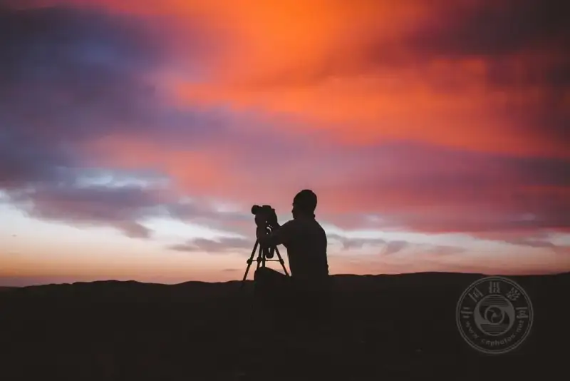
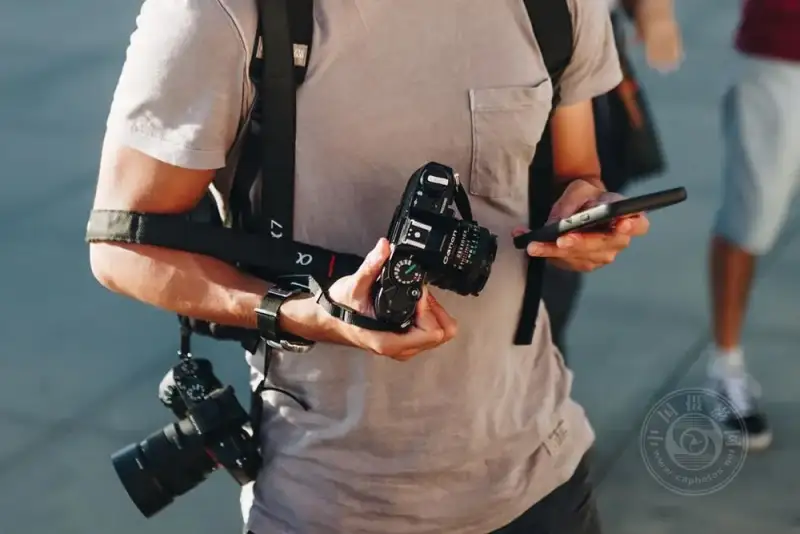
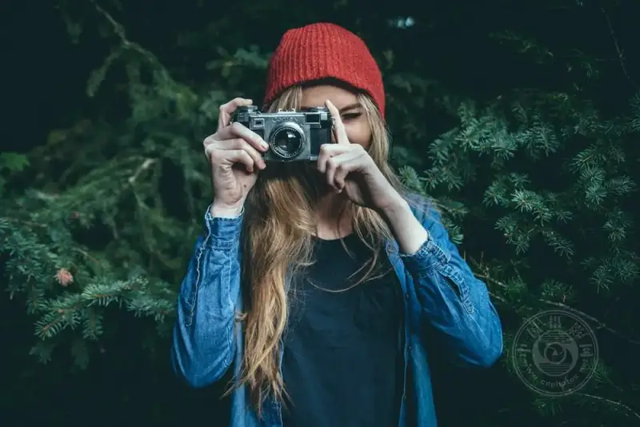
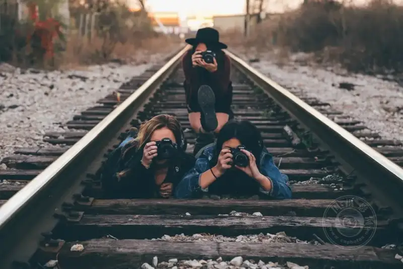
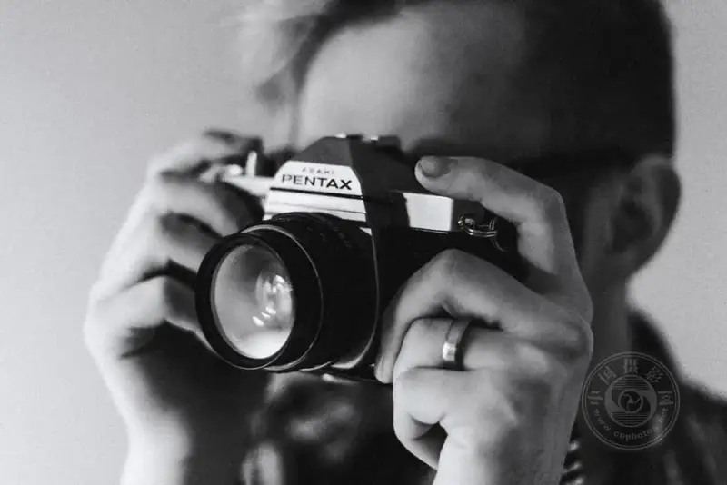

Maybe you just picked up a camera, or maybe you have shot for a long time. But in a quiet moment, have you also asked yourself: am I really shooting well?
There is no standard answer to this. Photography is never a contest. It is more like a way to talk with yourself. It is like growing a plant. You cannot rush it, and you cannot speed it up. It needs light, it needs time, and it needs your daily gaze and care. Maybe you want a new way to express yourself in the new year. Maybe you want more people to see your work. Whatever your starting point, the small things below can start today.
Go out when the light is softest

©Mohammad Alizade
The hour after sunrise and the hour before sunset are what photographers call the golden hour. The light then is golden and soft, like flowing honey.
In the end, photography is painting with light. When the light is right, the mood is there. On a weekend morning, stand by the window and quietly watch the light move from pale orange-pink to clear white. In that moment you will understand why so many photographers get up early for this short time. Images wrapped in warm light need little skill. They already have the power to reach the heart.
Get to know the tool in your hand again

©Luke Porter
How long has the camera in your hand been with you? Do you really know it, or are you only using a small part of what it can do?
I know the manual looks dull. But the pages you skipped may hold a feature you have always wanted. If you cannot read it, that is fine. There are many video tutorials now. Watch one and try it on the camera, like getting to know a new friend, slowly. Spend time learning its temperament. Know when it hesitates and when it gives a clean surprise. That kind of rapport comes with time, and it is worth it.
Give each shoot a reason

©Benjamin Combs
When you shoot with no aim, you lose steam along the way. Set yourself a small photo project. Shoot every cat you meet in your neighborhood. Record the shadow at five in the evening. Or take a set of everyday portraits of your family.
With a theme, you have a direction. You will find yourself waiting patiently for a frame. You will be glad when you catch the moment you hoped for by chance. That joy is the most genuine part of photography. When a project is done, look back at the photos. You will see your own change, and you will see the mark of having watched life closely.
Get close to others who love to shoot

©Seth Doyle
When you walk alone for a long time, you feel lonely. If you can find one or two photography friends to talk with, to view photos together, to walk the streets together, and to argue over one photo for hours, that is a happy thing.
You must have photographers you quietly admire. Find the courage to know them, look at their work, and talk with them. Many photographers are happy to share. If someone is willing to guide you, you will avoid many wrong turns. Even seeing a good photo someone shared in a group can light up that thought in you to shoot a little better.
Just shoot, even if you press the shutter only once a day

©Priscilla Du Preez
Nothing makes you improve more than shooting again and again.
Our age gives us a fine gift. Pressing the shutter no longer costs anything. Whether you use a phone or a camera, what matters is that the act of seeing, raising, and pressing happens every day. Over time, it becomes your way of watching the world, a quiet and steady rhythm in your life. The everyday shots you take at random, when you look back, often move you more than carefully planned frames. That is because they are real.
A closing note
Shoot in soft light, learn the camera in your hand, give yourself a project you want to finish, get close to others who love photography, and press the shutter day after day. These plain things, added together, are the road to improvement.
Do not rush to become a master. First be someone who shoots every day. Good photos will wait for you on the road.
A few quick questions
Q: Besides these, what else should I practice?
Practice composition and your sense of light. The rule of thirds, leading lines, symmetry, and negative space sound theoretical, but when you use them well, the frame instantly has structure. Also, try to stay calm in any light. Bright sun has its own way, and rainy days have their own mood. When you stop picking at the light, you are truly free.
Q: What moves you most about a good photographer?
In the end, it is not the technique. It is the way they see the world. They always notice details others miss. They can wait. They carry imagination in them. Most of all, they truly love it. Technique can be learned, but the patience to wait a long time for one beam of light or one expression cannot be learned. It can only grow from the heart.
Q: Can photography become a source of income?
It can, but it is a road you walk slowly. You must not only shoot well, but also let the right people see your work. Find your own angle, treat each person who trusts you with sincerity, and opportunities will slowly come. What makes you most unique is your most valuable asset. It may come slowly, but it is worth the wait.